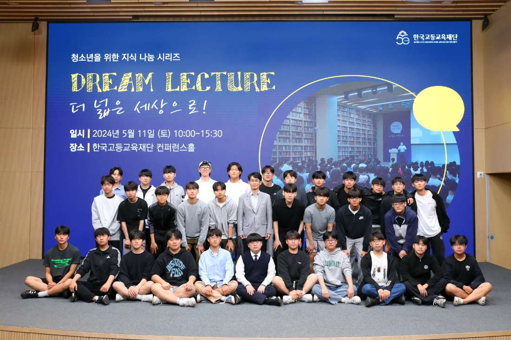

DREAM LECTURE / 02
초청특강
“더 넓은 세상으로!”
전국의 고등학생을 재단으로 초청해 다양한 분야의 전문가들과 직접 만나는 강연 프로그램입니다. 2013년 12월 첫 개최 이후 71회에 걸쳐 이어졌습니다.
참가비 없음
전국 고등학생 대상
재단 방문
2013년
첫 개최
{{ a.value }}
{{ a.label }}
ABOUT THE PROGRAM
작은 질문이
작은 질문이
인생의 방향을 바꿉니다
“더 넓은 세상으로!”는 전국의 고등학생을 재단으로 초청하여 다양한 분야의 전문가들과 직접 만날 수 있도록 마련된 강연 프로그램입니다. 학생들은 여러 분야의 전문가와 밀도 있는 만남 속에서 다양한 주제를 탐구하며, 학문이 어떻게 삶과 연결되고 작은 질문이 인생의 방향을 바꿀 수 있는지 체감하게 됩니다.
OVERVIEW
프로그램 개요
{{ o.k }}
{{ o.v }}
이런 점이 다릅니다
{{ d.text }}
SPEAKERS
강단에 선 사람들
HISTORY
연도별 강연 주제
2013년 첫 개최 이후 71회에 걸쳐 진행된 강연입니다. 연도를 선택해 그해의 회차와 주제를 확인하세요.
{{ s.no }}회
{{ s.date }}
{{ s.theme }}
{{ r.kind }}
{{ r.topic }}
{{ r.speaker }}
REPLAY
초청특강 다시보기 →
초청특강 다시 보기
강연과 질의응답 전체를 유튜브 재생목록에서 볼 수 있습니다.

서울특별시 강남구 테헤란로 211 (우 06141)
전화 02-6310-7876 · dreamlecture@kfas.or.kr